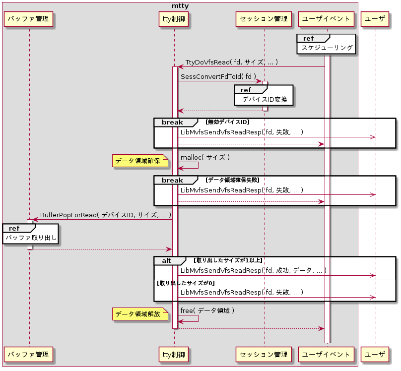
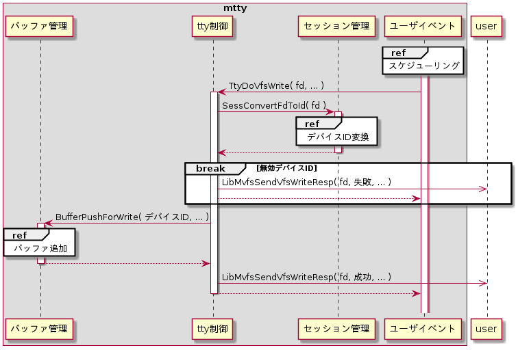

目次
- 概要
- 機能
- グローバル関数
概要
ユーザイベントモジュールからttyファイル読込みおよびttyファイル書込みを要求された時に、バッファ管理を用いてバッファからデータの取り出しと追加を行い、要求元に応答する。
機能 - ttyファイル読込
ttyファイル読込みは、ユーザイベントモジュールから読込み要求を受けた時に制御を行う。
シーケンスを以下に示す。

初めに、セッション管理モジュールのSessConvertFdToId()を用いて、グローバルファイルディスクリプタからデバイスIDを取得する。
デバイスIDの取得
| 関数 | SessConvertFdToId() | ||
| 戻り値 | デバイスIDが返る。 無効なデバイスIDの場合はVfsRead応答を失敗として送信し処理を中断する。 |
||
| 引数 | # | 設定値 | 説明 |
| 1 | (TtyDoVfsRead()の引数globalFd) | グローバルファイルディスクリプタ | |
次に、要求されたサイズ分のデータをバッファから取り出し格納しておく為のデータ領域をC標準ライブラリのmalloc()を用いて確保する。データ領域の確保が失敗した場合は、mvfsライブラリのLibMvfsSendVfsReadResp()を用いて要求処理が失敗した事を要求側へ応答する。
データ領域の確保
| 関数 | malloc() | ||
| 戻り値 | 確保したデータ領域のポインタ | ||
| 引数 | # | 設定値 | 説明 |
| 1 | (TtyDoVfsRead()の引数size) | データサイズ | |
次に、バッファ管理のBufferPopForRead()を用いてバッファからデータを取り出す。
バッファ取り出し
| 関数 | BufferPopForRead() | ||
| 戻り値 | 実際に取り出したサイズ | ||
| 引数 | # | 設定値 | 説明 |
| 1 | (TtyDoVfsRead()の引数id) | デバイスID | |
| 2 | (TtyDoVfsRead()の引数size) | 読込みサイズ | |
| 3 | (変数ポインタ) | バッファ | |
バッファから取り出したデータサイズが1以上の場合は、mvfsライブラリのLibMvfsSendVfsReadResp()を用いて要求処理が成功した事を要求側へ応答する。バッファから取り出したデータサイズが0の場合は、失敗した事を応答する。
VfsReadの応答
(BufferPop()で取り出したサイズが1以上の場合)
(BufferPop()で取り出したサイズが1以上の場合)
| 関数 | LibMvfsSendVfsReadResp() | ||
| 戻り値 | 処理が成功したか否か | ||
| 引数 | # | 設定値 | 説明 |
| 1 | (TtyDoVfsRead()の引数globalFd) | グローバルファイルディスクリプタ | |
| 2 | LIBMVFS_RET_SUCCESS | 成功 | |
| 3 | 0 | 非レディ。BufferPop()にて取り出したサイズが 要求サイズより小さい場合に設定する。 |
|
| MVFS_READY_READ | レディ。BufferPop()にて取り出したサイズが 要求サイズと等しい場合に設定する。 |
||
| 4 | (変数ポインタ) | データ | |
| 5 | (変数) | データサイズ | |
| 6 | (変数ポインタ) | エラー要因 | |
VfsReadの応答
(デバイスID変換の失敗、データ確保の失敗、または、BufferPop()で取り出しサイズが0の場合)
(デバイスID変換の失敗、データ確保の失敗、または、BufferPop()で取り出しサイズが0の場合)
| 関数 | LibMvfsSendVfsReadResp() | ||
| 戻り値 | 処理が成功したか否かの判断で使用する。 | ||
| 引数 | # | 設定値 | 説明 |
| 1 | (TtyDoVfsRead()の引数globalFd) | グローバルファイルディスクリプタ | |
| 2 | LIBMVFS_RET_FAILURE | 失敗 | |
| 3 | 0 | 非レディ | |
| 4 | NULL | データ無し | |
| 5 | 0 | データサイズ | |
| 6 | (変数ポインタ) | エラー要因 | |
機能 - ttyファイル書込
ttyファイル書込みは、ユーザイベントモジュールから書込み要求を受けた時に制御を行う。
シーケンスを以下に示す。

初めに、セッション管理モジュールのSessConvertFdToId()を用いて、グローバルファイルディスクリプタからデバイスIDを取得する。
デバイスIDの取得
| 関数 | SessConvertFdToId() | ||
| 戻り値 | デバイスIDが返る。 無効なデバイスIDの場合はVfsWrite応答を失敗として送信し処理を中断する。 |
||
| 引数 | # | 設定値 | 説明 |
| 1 | (TtyDoVfsRead()の引数globalFd) | グローバルファイルディスクリプタ | |
VfsWriteの失敗応答
| 関数 | LibMvfsSendVfsWriteResp() | ||
| 戻り値 | 処理が成功したか否か | ||
| 引数 | # | 設定値 | 説明 |
| 1 | (TtyDoVfsRead()の引数globalFd) | グローバルファイルディスクリプタ | |
| 2 | LIBMVFS_RET_FAILURE | 失敗 | |
| 3 | MVFS_READY_WRITE | レディ。 | |
| 4 | 0 | 書込みサイズ | |
| 5 | (変数ポインタ) | エラー要因 | |
次に、バッファ管理のBufferPush()を用いてバッファにデータを追加する。
バッファ追加
| 関数 | BufferPush() | ||
| 戻り値 | 実際に追加したサイズ | ||
| 引数 | # | 設定値 | 説明 |
| 1 | (TtyDoVfsWrite()の引数id) | デバイスID | |
| 2 | (TtyDoVfsWrite()の引数pData) | データ | |
| 3 | (TtyDoVfsWrite()の引数size) | データサイズ | |
次に、mvfsライブラリのLibMvfsSendVfsWriteResp()を用いて書込み要求の応答を行う。
VfsWriteの応答
| 関数 | LibMvfsSendVfsWriteResp() | ||
| 戻り値 | 処理が成功したか否か | ||
| 引数 | # | 設定値 | 説明 |
| 1 | (TtyDoVfsRead()の引数globalFd) | グローバルファイルディスクリプタ | |
| 2 | LIBMVFS_RET_SUCCESS | 成功 | |
| 3 | 0 | 非レディ。BufferPush()にて追加した データサイズが要求サイズより小さい場合に設定する。 |
|
| MVFS_READY_WRITE | レディ。BufferPush()にて追加したデータサイズが 要求サイズと等しい場合に設定する。 |
||
| 4 | (BufferPush()の戻り値) | 書込みサイズ | |
| 5 | (変数ポインタ) | エラー要因 | |
グローバル関数 - TtyDoVfsRead()
| 関数 | TtyDoVfsRead() | |||
| 概要 | ttyファイル読込 | |||
| 説明 | 引数globalFdに対応する読込み用バッファからデータを取り出してVfsRead要求の応答を行う。 | |||
| 宣言 |
|
|||
| 引数 | # | 引数名 | 値 | 説明 |
| 1 | globalFd | (任意の値) | グローバルファイルディスクリプタ | |
| 2 | readIdx | (任意の値) | 読込みインデックス(未使用) | |
| 3 | size | (任意の値) | 読込みサイズ | |
グローバル関数 - TtyDoVfsWrite()
| 関数 | TtyDoVfsWrite() | |||
| 概要 | ttyファイル書込み | |||
| 説明 | 引数globalFdに対応する書込み用バッファにデータを追加してVfsWriteの応答を行う。 | |||
| 宣言 |
|
|||
| 引数 | # | 引数名 | 値 | 説明 |
| 1 | globalFd | (任意の値) | グローバルファイルディスクリプタ | |
| 2 | writeIdx | (任意の値) | 書込みインデックス(未使用) | |
| 3 | *pBuffer | (任意の値) | 書込みデータ | |
| 4 | size | (任意の値) | 書込みサイズ | |